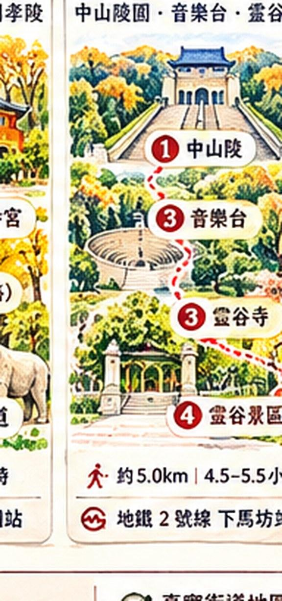

📍 站位：廣場開放區
取景：紀念建築主軸
11/25（三） 中山陵・音樂台・靈谷寺
🍁 11-25｜中山陵・音樂台・靈谷寺｜清晰完整路線圖｜水彩待重製

查看舊水彩局部素材（原始檔左右已裁缺，非完整路線圖）

📍 當日路線・大字清晰版
以下依本日原行程時間安排重排，並非依模糊圖片辨字。可隨手機放大，水彩圖保留作景觀參考。
- 1中山陵廣場預估抵達 09:30
- 2音樂台觀眾席預估抵達 11:05
- 🍜景區午餐預估抵達 12:15
- 4靈谷寺／靈谷塔預估抵達 14:15
時間為估計，非預約時間；實際接駁及步行依現場路況。路線圖片的地理比例與連線尚未通過驗收。
11/25（三） 中山陵・音樂台・靈谷寺展開 ▾
⏱️ 慢走1.5倍｜到達機位與拍照時間
到達時間是估計，含慢走及必要轉乘緩衝；不是精確定位或預約時段。
08:30出發／前站 → 約09:30抵達｜中山陵廣場
🚶 地鐵＋景區接駁約60–85分
📸 建築拍照45–60分
⚠️ 392級台階非必爬
10:45出發／前站 → 約11:05抵達｜音樂台觀眾席
🚶 步行20–30分
📸 拍白鴿與弧形舞台40–55分
⚠️ No.8地面替代
12:00出發／前站 → 約12:15抵達｜景區午餐
🚶 移動15–25分
📸 用餐60–75分
⚠️ 景區餐飲可能排隊
13:45出發／前站 → 約14:15抵達｜靈谷寺／靈谷塔
🚶 接駁＋步行30–50分
📸 拍照45–60分
⚠️ 流徽榭改為選配，勿硬塞
🚇 怎麼去
1號線轉2號線至鐘山景區；優先景區接駁
📷 看什麼・怎麼拍
中山陵看軸線；音樂台拍白鴿；靈谷寺看秋林
☔ 雨天／替代
雨天減少登階，改室內或短線
🍜 南京大牌檔 中山陵店
📸 今日沿路最佳機位（依景點順序）
No.8｜空拍替代｜音樂台觀眾席地面視角
原圖 No.8 為空拍；改由開放觀眾席較高排拍弧形舞台與白鴿。
加選 A3｜流徽榭湖景
在湖畔取亭台倒影，路線較遠可視體力選擇。
No.9｜靈谷景區｜靈谷塔秋色
在靈谷景區開放步道，以彩葉框住塔身。
📷 今日景點照片・最佳拍照點
📍 站位：觀眾席上排
取景：弧形舞台＋白鴿
📍 站位：湖畔開放區
取景：亭台＋倒影
📍 站位：塔外開放步道
取景：彩葉框塔
⚠️ 本圖為「入口→步道→建議站位→主景」的概念相對位置圖，不是依真實園區方位測繪，也不代表入口與機位間的實際路徑、距離或東西南北。高德目前連至景點區域，未核實精確拍攝座標；現場以開放道路與標示為準。